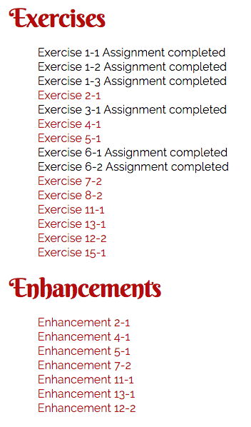

Build the Exercises Page
Introduction
There are a number of end of chapter exercises and enhancements that will be completed throughout the semester. In order for you to organize yourself and provide a means for the professor or teaching assistant to access your work you will create an exercises page and post it to your production server. Then, create a link to this page in the footer of your web site.
Construction Directions
- Create a new web page using your site template. This template can be one that you created in CIT 230 or a new one. In either case, the template should be valid HTML5, should use semantic markup, and should be styled using valid CSS3.
- Then, using either the syllabus or the various lesson overviews, create a listing of all the chapter exercises and enhancements in order, by lesson, using proper HTML to organize the list(s).
- Post the Exercise page to your site.
- Using your footer module or another means appropriate to your web site, add a link to the exercise page in the footer of your site pages. Upload and test the new code to ensure that the exercise page can be accessed using the link in the footer of your site pages.
Use Directions
As you complete the exercises and enhancements in each lesson, you will add a link in the Exercises page to the working directory for the Exercise and Enhancement. In some instances, there is no working directory, and you will instead add a completion statement next to the exercise (e.g. Exercise 1–1: Completed). Exercises that do not have a physical file to link to will be indicated in the Lesson Overview.
As always, you should upload and test the correct operation of all links and file changes when they occur. It is your responsibility to make sure things are working.
Grading
This assessment is graded complete or incomplete. If it is posted and the link to the page is created as directed, credit will be given.
Objective
This assessment is graded for Objective 6.
Example
